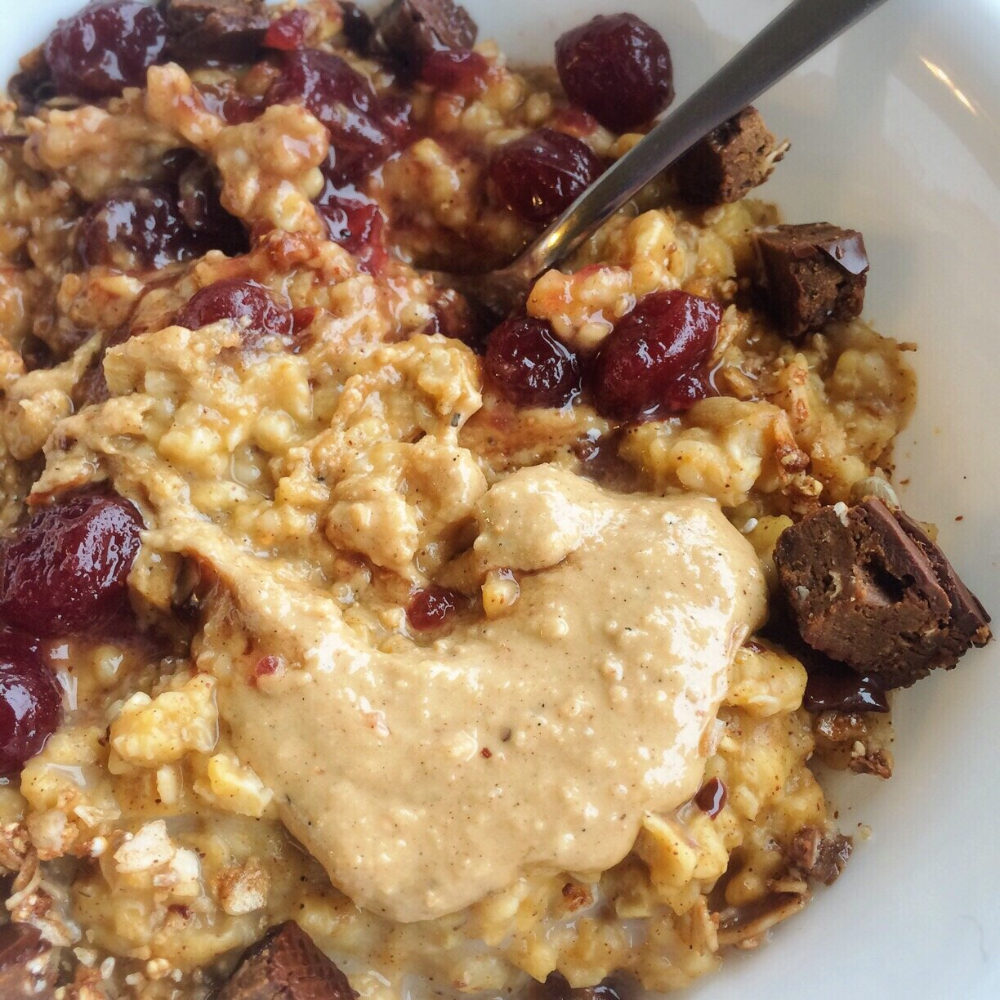
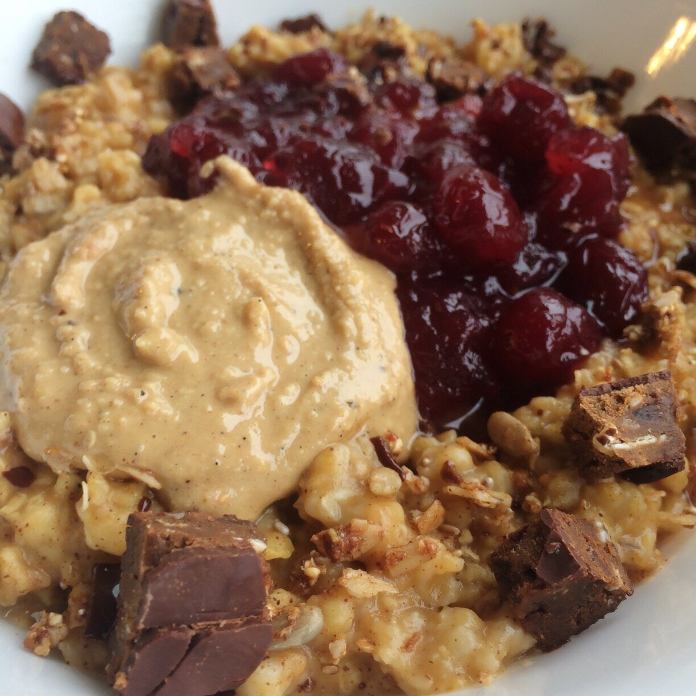

Holiday Oatmeal! (vegan)

IMG_3194

IMG_3193
I feel like it's been so longggg since I've been able to update the blog lately.
After my cookbook was released, I spent over a week back home in Georgia to see my mom and friends for Thanksgiving. :) It was soo nice to relax and feel the familiar comfort of home. I've only been away for 3 months, but it feels much longer for some reason. I guess since I've never been away that long - I've ALWAYS lived in Georgia.
Of course, the day I was to leave, it snowed a ton here. So I got a crash course in driving in the snow. It was still around, and worse, coming back, so um yeah. I was kinda scared I wouldn't make it back for a few days but it wasn't too bad. I'm learning wooooo. But I'll never learn to love the snow, ha. I can just deal.
And NOWWW... I'm doing Vlogmas!! So most of my daily updates & happenings will be there! You should check those videos out and stufffffff. It's fun :) I've never vlogged so frequently before, so it's an awesome challenge. I absolutely love it. I also love watching everyone else's daily videos. It's like, hanging out with my friends on a regular basis. Except...in a much more extremely lonely way haha.
I saw in one vlog, someone made pumpkin oatmeal and put cranberries on top. After all the many many combinations of oatmeal I've had over the years, I honestly don't think I've ever had cranberries in my oats. And I felt like an oatmeal-eater failure. SOOO I immediately tried them today!!!
SO GOOOOD. Mandatory to try - I just made it a law. A global law.
Holiday Oatmeal
Serves: 1
-
1/2 cup oats
-
3/4 cup almond milk (or water)
-
2 TBSP canned pumpkin puree
-
1 stevia packet
-
1/2 tsp cinnamon (or pumpkin pie spice)
-
1/2 tsp vanilla extract
-
2 TBSP whole cranberry sauce for topping
-
peanut butter for topping!!
In a bowl, mix the oats, almond milk, pumpkin puree, stevia, cinnamon, and vanilla. It should seem pretty liquid-y. Microwave for 2 minutes, stirring half-way through. Once done, stir the oats to see how you like the consistency. If still liquid, microwave for 15-30 seconds more; if too try, add another splash of almond milk and stir. The oats will be soo fluffy because of the pumpkin puree!!
Top with the whole cranberries and peanut butter. I also added chopped Square Bars and some granola. The flavors together were so good!!